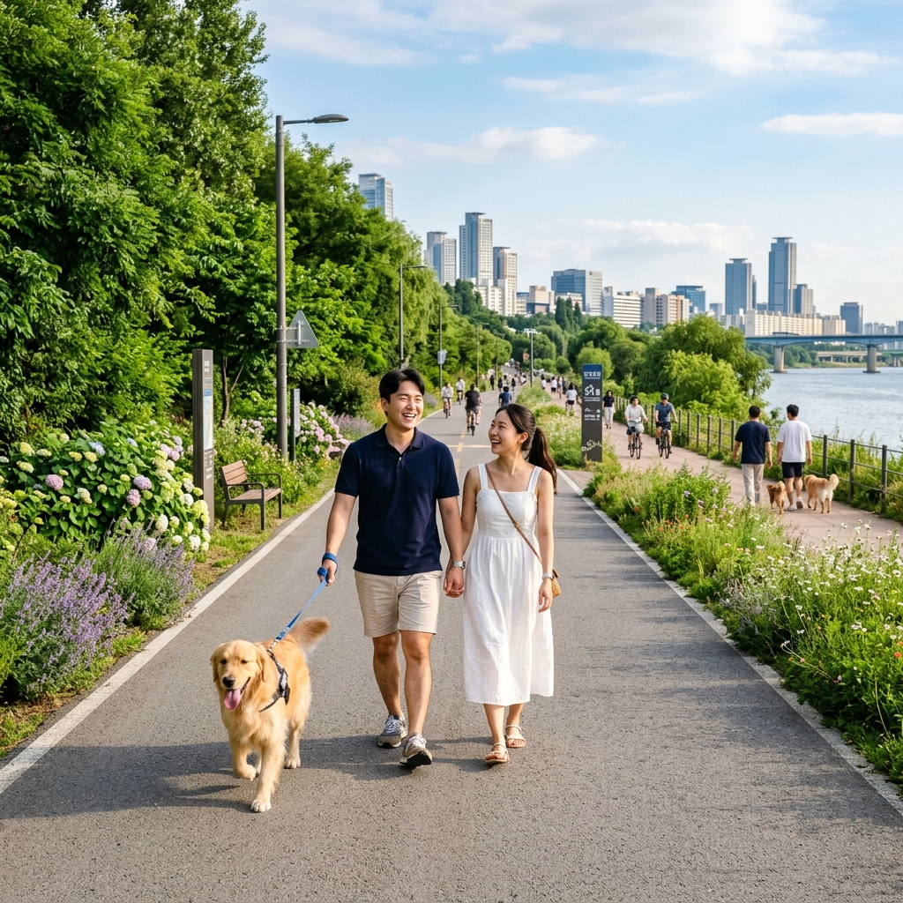
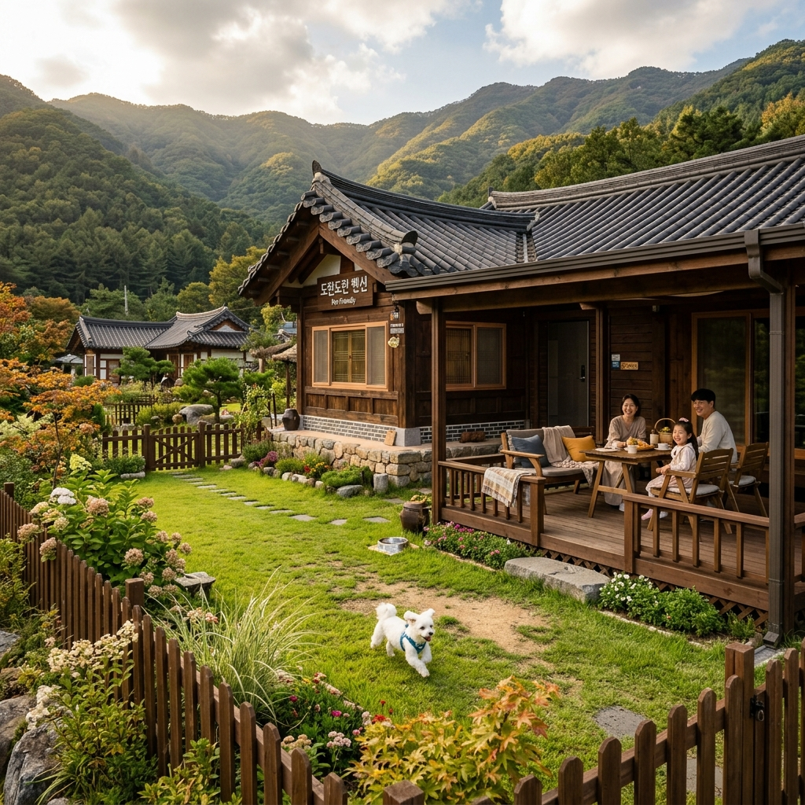

반려견과 여행할 때 가장 먼저 부딪히는 문제는 입장 가능 여부입니다. 국립공원, 문화재 구역, 일부 지방자치단체 관리 해수욕장은 반려동물 출입 자체를 금지하는 경우가 많습니다.
반면 사설 캠핑장, 글램핑장, 반려동물 전용 테마파크, 일부 펜션 단지는 반려견 동반을 허용할 뿐 아니라 오히려 특화 서비스를 제공하기도 합니다.
문제는 이 정보가 한곳에 모여 있지 않다는 점입니다. 같은 수도권 지역이라도 공원마다, 관리 주체마다 규정이 다르기 때문에 방문 전 개별 확인이 필수입니다.
방법 1 — 공식 홈페이지·SNS: 대부분의 관광지는 공식 홈페이지 FAQ 또는 SNS 계정에 반려동물 관련 규정을 올려둡니다. 캠핑장이나 펜션은 네이버 예약 페이지 상세 설명란에도 표시됩니다.
방법 2 — 전화 문의: 가장 확실한 방법입니다. 단, 시즌에 따라 규정이 바뀌는 곳도 있으므로 방문 직전 다시 한번 확인이 좋습니다.
방법 3 — 반려인 커뮤니티 후기: 네이버 카페(댕댕이랑여행·강아지와여행 등)나 인스타그램에서 최근 후기를 검색하면 실제 방문한 사람들이 경험을 공유합니다. 공식 정보와 함께 참고하면 도움이 됩니다.

공원·둘레길: 대부분의 도시 공원은 목줄 착용 조건으로 반려견 동반이 가능합니다. 북한산 둘레길, 수락산 둘레길 일부 구간도 목줄 착용 후 동반 가능하지만 국립공원 핵심 탐방로는 제한됩니다.
카페·식당: 반려견 동반 카페가 경기도 가평·양평·남양주 등지에 늘고 있습니다. 외부 테라스는 동반 가능하지만 내부 좌석은 금지인 경우도 많으므로 확인이 필요합니다.
펜션·캠핑장: 반려견 동반 전용 존을 운영하는 곳이 증가하고 있습니다. 가평·포천·양평 쪽에 반려견 동반 캠핑장이 여럿 있으며, 개별 풀장이 딸린 반려견 특화 펜션도 있습니다.
반려동물 테마파크: 경기권에 반려동물 놀이터, 어질리티 시설을 갖춘 전용 공간이 생기고 있습니다. 반려견이 목줄 없이 뛸 수 있는 공간을 찾는다면 검색해볼 만합니다.
| 카테고리 | 준비물 | 비고 |
|---|---|---|
| 필수 서류 | 광견병 접종증명서 | 일부 시설 제출 요구 |
| 이동 장비 | 목줄·하네스·이동가방 | 대중교통 이용 시 케이지 필수 |
| 위생 용품 | 배변봉투·웻티슈·탈취제 | 배변 처리 필수 |
| 음식·물 | 사료·간식·물·휴대 용기 | 탈수 방지 중요 |
| 응급 대비 | 근처 동물병원 위치 메모 | 지도 앱으로 사전 확인 |
반려견 동반 여행의 또 다른 변수는 이동 수단입니다.
KTX·무궁화 등 기차: 소형 반려동물은 이동장에 넣어 짐칸에 놓는 조건으로 동반 가능합니다. 반드시 케이지(이동장) 필요. 열차 탑승 전 코레일 고객센터(1544-7788)나 앱에서 규정 확인.
버스·지하철: 이동장에 넣은 상태에서만 동반 가능합니다. 이동장 최대 크기와 무게 제한이 있으므로 대형견은 사실상 대중교통 이용이 어렵습니다.
자가용: 가장 편리하지만 반려견을 안전벨트나 이동장 없이 좌석에 자유롭게 두면 급제동 시 위험합니다. 이동장이나 전용 하네스·안전벨트 사용을 권합니다.

열사병 주의: 6~8월에는 한낮 외출을 피하는 것이 좋습니다. 차량 실내 온도가 급격히 오르므로 잠깐이라도 강아지를 혼자 차에 두면 안 됩니다.
발바닥 화상: 아스팔트·모래 표면 온도가 체감 온도보다 훨씬 높습니다. 오전 10시 이전 또는 오후 6시 이후 산책을 권장합니다. 방수·쿨링 부티를 신기면 더 좋습니다.
물 공급: 더운 날 야외에서는 평소 두 배 이상의 물을 준비하고 자주 급수합니다. 접이식 물그릇을 챙기면 편리합니다.
반려견 동반 숙소를 예약할 때 확인할 사항입니다.
추가 요금 여부: 반려견 동반 청소비, 비품 세척비 등 추가 요금이 있는지 확인합니다.
마당·야외 공간: 강아지가 목줄 없이 뛸 수 있는 전용 공간이 있는지 확인합니다. 이 조건이 있는 숙소는 강아지 스트레스가 훨씬 줄어듭니다.
인근 동물병원 위치: 만약의 상황에 대비해 숙소 근처 동물병원 위치를 지도 앱에 저장해 두는 것이 좋습니다.
다른 반려동물과의 접촉 가능성: 공용 공간이 있는 숙소에서 낯선 개와 갑자기 마주치면 싸움이 날 수 있습니다. 전용 공간이 분리된 숙소가 안심이 됩니다.
좋은 점: 강아지와 함께 이동하면 낯선 곳에서도 산책이 더 활발해집니다. 혼자 돌아다닐 때는 그냥 지나쳤을 공원이나 골목을 강아지 덕분에 더 깊이 탐색하게 됩니다. 반려견을 매개로 현지 주민이나 다른 반려인과 자연스럽게 대화가 생기기도 합니다.
불편한 점: 강아지를 데리고 이동하면 카페나 식당 선택지가 좁아집니다. 특히 점심 시간에 "여기는 반려동물 안 됩니다"를 여러 번 듣고 나면 피곤해질 수 있습니다. 사전 리서치 없이 무작정 떠나면 곤욕을 치를 수 있으므로 반려인 커뮤니티 후기를 미리 읽어두는 것이 핵심입니다.
반려견과 여행할 때 핵심은 사전 확인입니다. 공식 홈페이지→전화 문의→커뮤니티 후기 순서로 확인하면 현장에서의 실망을 크게 줄일 수 있습니다.
여름에는 열사병과 발바닥 화상 예방을 위해 오전이나 저녁 시간대 이동을 원칙으로 삼으세요. 강아지도, 보호자도 지치지 않는 여행이 가장 좋은 여행입니다.